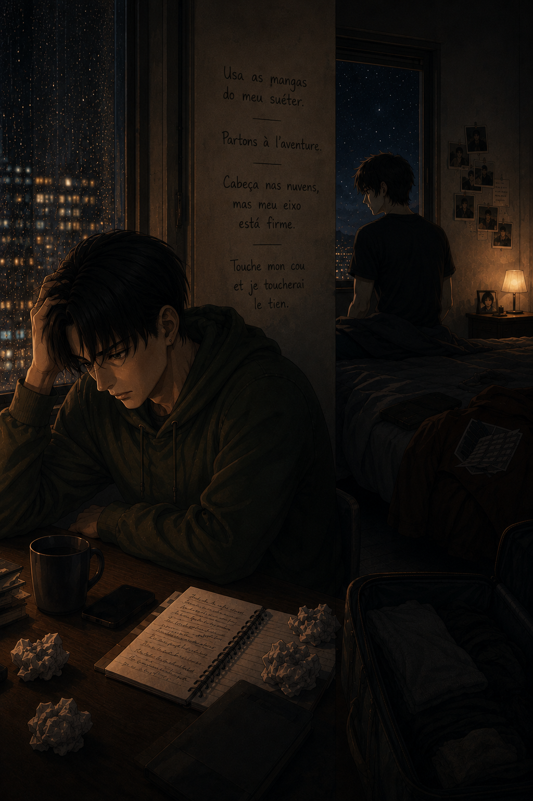

Nothing Else Matters
Levi — POV

It’s been going on for days now. Not even real arguments, not the kind that explode and end in something clear, just this constant friction that never fully settles. A word taken the wrong way, a tone that doesn’t carry through the phone the way it should, something from the past that suddenly feels too close again. It’s exhausting in a way Levi doesn’t quite know how to explain, because nothing is actually wrong. Not really. And that’s what makes it worse.
He knows it’s not Eren. It never is.
If anything, Eren is the only part of this that still feels stable. He answers, he explains, he reassures without getting tired of doing it again and again. He doesn’t snap, doesn’t walk away, doesn’t make Levi feel like he’s asking too much. And that should be enough. It should settle everything immediately. But it doesn’t always land the way it should, and Levi hates that about himself.
It’s stupid, the way his mind works lately. Everything can be fine, completely normal, and then something small slips in. A detail that doesn’t matter. A name, a memory, something that belongs to a time that has nothing to do with him. And suddenly it’s there, sitting in his head like it deserves space. He knows it doesn’t. He knows it while it’s happening. But knowing doesn’t stop it.
He doesn’t even care about the past, not really. That’s the most frustrating part. It’s not jealousy in the way people usually mean it. It’s not about competing with something or someone. It’s more like this constant, irrational thought that maybe none of this is actually new. That maybe what he has now isn’t as rare as it feels, that maybe Eren has already done this before, already felt this before, already learned how to stay even when things aren’t good. And Levi ends up wondering if that’s what this is — something Eren is just… used to.
It doesn’t make sense. He knows it doesn’t. Eren never gives him a reason to think like that.
But the distance does.
Because distance turns everything into words. And words are never enough to carry everything they’re supposed to. There’s no way to see the small reactions, the instinctive ones. No way to feel the silence properly, to know if it’s comfortable or heavy. No way to reach out without thinking about it. Everything has to be said, explained, clarified. And when it isn’t, Levi fills in the blanks himself.
That’s where it goes wrong.
Because he doesn’t fill them in kindly.
He assumes the worst version of things, not because he believes Eren would hurt him, but because he doesn’t fully understand why Eren wouldn’t. Not when nothing in his life before this has ever looked like that. Not when staying has always been something people did for the wrong reasons.
Eren doesn’t do that. Levi knows it.
And still, the thought slips in sometimes.
It would be easier if they were in the same room. That’s the part he keeps coming back to. If Eren was here, none of this would spiral the way it does. It would take one look, one shift in posture, one quiet moment where nothing needs to be said, and everything would settle on its own. Levi wouldn’t have to guess. He wouldn’t have to interpret. He wouldn’t have to sit there, staring at a screen, trying to decide if something feels off or if it’s just him again.
He misses that more than he expected.
Not even in a dramatic way. Just in small, constant things that don’t leave him alone. The idea of being close enough to hear Eren laugh without it going through a phone. The weight of him next to him, real and grounding. Something as simple as leaning into him without having to think about time zones, calls, or whether the connection is stable. It’s stupid how much difference that would make, and yet it does.
Because right now, everything has to go through explanations.
And Levi is tired of explaining thoughts he doesn’t even believe in.
Tired of hearing himself say things and immediately knowing they’re wrong, but not being able to stop before they’re already out there. Tired of watching Eren handle it with patience he doesn’t feel like he deserves. Tired of knowing that none of this is actually about Eren, and still making it his problem anyway.
The worst part is that it doesn’t change anything real between them. Not the important things. Not the way Levi feels, not the way Eren stays, not the fact that even after days like this, Levi’s thoughts still circle back to him without fail.
That never shifts.
Even when they need space. Even when they decide to pause, to breathe, to stop talking for a few hours because everything is getting too tangled. Most of the time, it’s Eren who asks for it first. He says that if he doesn’t, Levi never will — and he’s right.
Levi doesn’t like it. Not because he disagrees, but because it means admitting that things reached that point in the first place. That Eren got tired before he did. That he had to be the one to step back so it wouldn’t get worse.
And still, even then, Levi doesn’t suddenly think about something else. He doesn’t move on to something lighter. It’s still Eren. Always Eren. Just quieter, maybe, but still there in the background of everything.
He doesn’t know how to explain that either.
How something can feel so certain and so fragile at the same time. How he can trust Eren completely and still doubt everything around it. How he can know, logically, that this is different, and still struggle to let himself believe it without questioning it every few hours.
It would be easier if it had never been like this before.
If calmness wasn’t something that always came with conditions.
If staying didn’t usually mean settling, or bending.
But that’s not the case. And now he’s here, trying to adjust to something that doesn’t follow any of the rules he’s used to.
It’s messy. It’s imperfect. It’s frustrating for both of them.
And still, none of it makes him want to leave.
And lately, it’s sharper than usual.
Not just the distance, not just the absence — but something more immediate. Something that doesn’t wait, that doesn’t soften with time.
He misses him, right now.
Not in a quiet, manageable way. Not in something he can push aside and deal with later. It sits under everything, constant, physical in a way he can’t ignore.
It’s stupid how much he needs him sometimes. How instinctive it feels. Like reaching for something that should be there and realizing it isn’t.
No matter how many times he gets it wrong… it’s still him.
It always comes back to him.
Even like this. Even when it’s messy, when it doesn’t make sense, when he wishes he could just be quiet and stop overthinking everything.
It doesn’t change the one thing that matters.
He loves him.
Not in a careful way. Not in something controlled or measured. In something that sits too deep to be reasoned with, too constant to disappear just because things get hard.
And maybe that’s why none of it will ever be enough to make him leave.
Because leaving will never be an option.
The silence lingers longer than it should.
Levi doesn’t move at first. Just sits there, staring at nothing in particular, thoughts still tangled, still loud in a way he can’t quite shut off.
Then, almost without thinking, his hand shifts.
He reaches for his phone.
There’s a second — brief, barely there — where he hesitates.
Not because he doubts.
But because he knows exactly what this means.
The call goes through anyway.
“…hey.”